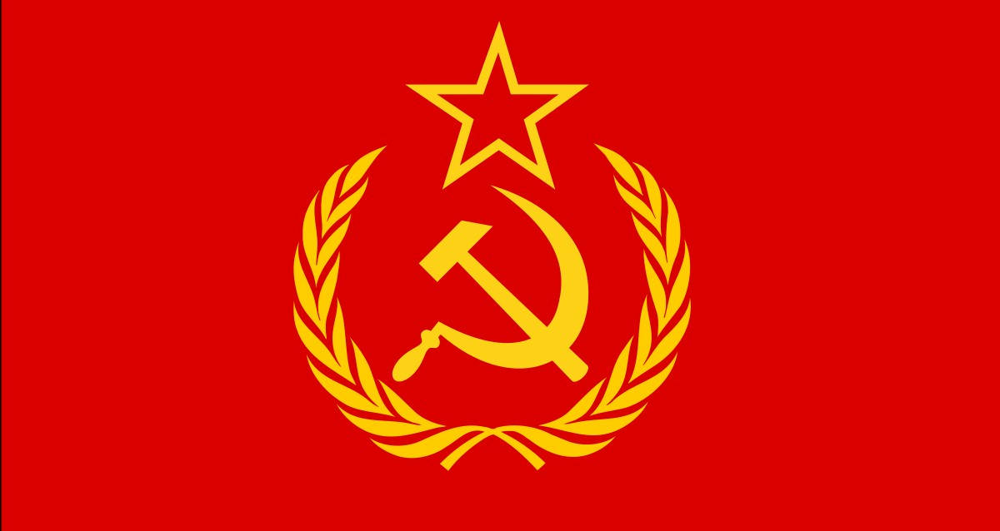

USSR and Stalin's Legacy
Joseph Stalin, a key figure in Soviet history, ruled the Union of Soviet Socialist Republics (USSR) with an iron fist from the mid-1920s until his death in 1953. This period marked a complex chapter characterized by rapid industrialization, forced collectivization, and the tumultuous era of World War II.
Stalin's death on March 5, 1953, marked the end of an era. His legacy is one of contradictions, as he is remembered for steering the USSR to victory in a global conflict while simultaneously perpetrating atrocities against his own people. After his death, the process of de-Stalinization began under the leadership of Nikita Khrushchev, acknowledging and condemning some of the excesses of Stalin's regime.
The legacy of Joseph Stalin remains contentious. While some view him as a wartime hero and an architect of Soviet industrialization, others emphasize the severe human cost of his policies. The Gulag system, political purges, and mass executions tarnish his legacy with a dark stain. The Great Purge of the 1930s, during which political opponents, intellectuals, and perceived enemies were systematically eliminated, stands as a testament to Stalin's cruelty.
In conclusion, Stalin's reign in the USSR left an indelible mark on history, shaping the Soviet Union into a global power while inflicting immense suffering on its people. The complexity of his legacy prompts ongoing debate about the balance between his achievements and the undeniable cruelty that defined his rule.